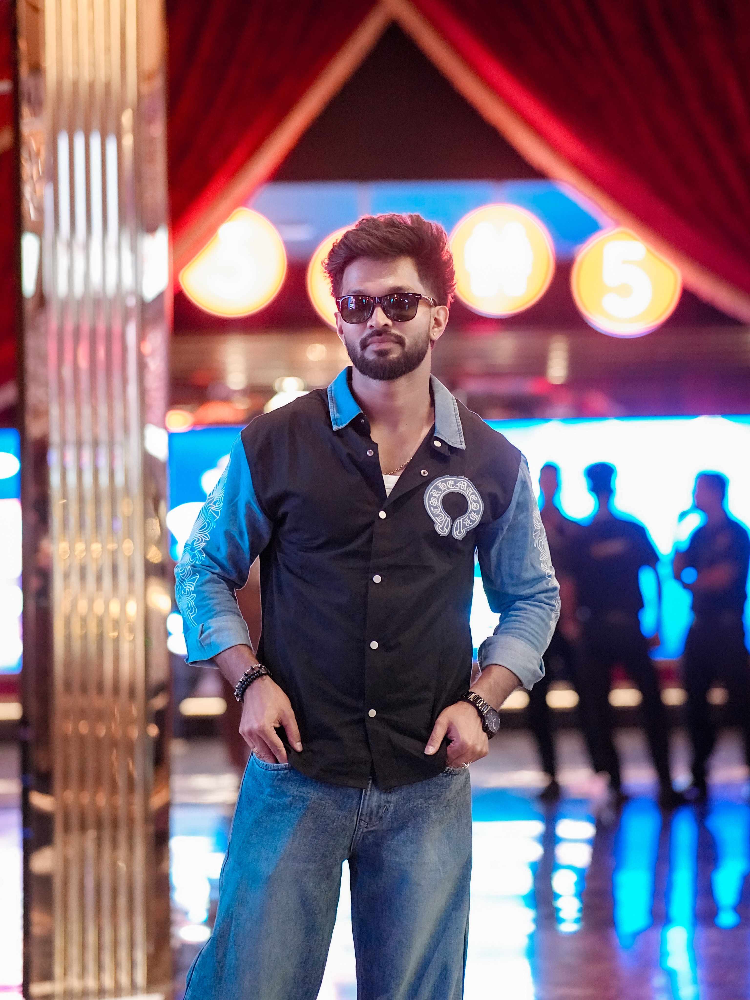
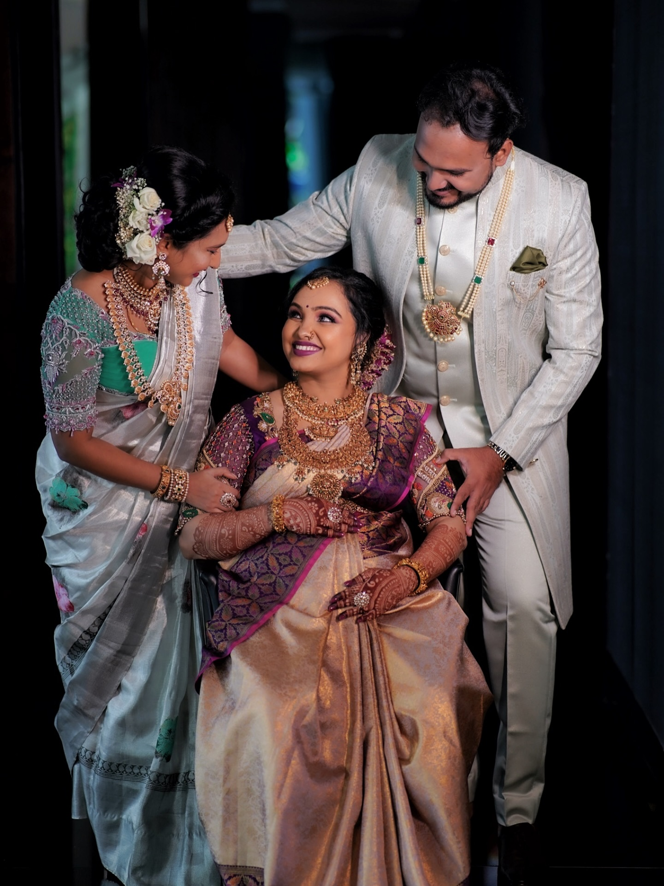
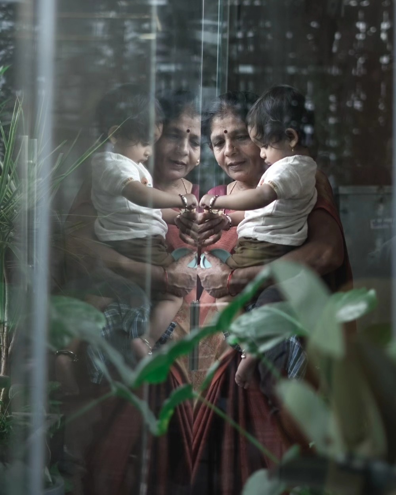

CAPTURING MOMENTS
CAPTURING MOMENTS
Not what was there, but how it was seen






I’m Shivu, a Photographer and Filmmaker based in Namma Bengaluru, who believes every frame begins with a choice: where to stand, what to include and what to leave out. I look for quiet light and angles most people walk past. My work is less about the scene itself and more about the moment it made me stop.
KNOW MORE ABOUT THOSE EYES →